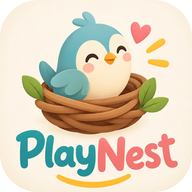

Πολιτική απορρήτου
Τελευταία ενημέρωση: 24 Νοεμβρίου 2026
Το PlayNest είναι εφαρμογή με ιδέες παιχνιδιού για γονείς παιδιών 1–8 ετών. Πάροχος είναι η Viorilo Digital (επικοινωνία: info@viorilo.gr). Σχεδιάσαμε την εφαρμογή ώστε να συλλέγει όσο το δυνατόν λιγότερα δεδομένα.
1. Δεδομένα που μένουν μόνο στη συσκευή σας
Δεν υπάρχουν λογαριασμοί. Όσα καταχωρείτε (όνομα ή ψευδώνυμο και ηλικιακή ομάδα παιδιού, ενδιαφέροντα, αγαπημένα, εβδομαδιαίο πρόγραμμα, ημερολόγιο παιχνιδιού με σημειώσεις και αξιολογήσεις, ρυθμίσεις υπενθύμισης, δραστηριότητες που δημιούργησε το AI) αποθηκεύονται μόνο τοπικά στη συσκευή σας και δεν αποστέλλονται σε εμάς. Τα διαγράφετε με απεγκατάσταση της εφαρμογής ή εκκαθάριση των δεδομένων της.
2. PlayNest AI και Snap & Play
Μόνο όταν χρησιμοποιείτε αυτές τις λειτουργίες, αποστέλλονται στον διακομιστή μας και από εκεί στην Anthropic (πάροχος του μοντέλου Claude) για να δημιουργηθεί η δραστηριότητα:
- η ηλικιακή ομάδα, ο διαθέσιμος χρόνος, ο χώρος, το είδος δραστηριότητας και το κείμενο που γράφετε για τα υλικά·
- στο Snap & Play, η φωτογραφία που επιλέγετε (σε μικρότερη ανάλυση).
Δεν στέλνουμε όνομα παιδιού ή άλλα στοιχεία του προφίλ. Δεν αποθηκεύουμε τις φωτογραφίες ούτε τα αιτήματα στους διακομιστές μας. Η Anthropic επεξεργάζεται τα δεδομένα για λογαριασμό μας, δεν τα χρησιμοποιεί για εκπαίδευση μοντέλων και τα διατηρεί για περιορισμένο χρόνο σύμφωνα με τους όρους της. Παρακαλούμε μη φωτογραφίζετε πρόσωπα.
3. Όρια χρήσης και ασφάλεια
Για να προστατεύσουμε την υπηρεσία από κατάχρηση, μετράμε πόσες φορές χρησιμοποιείται το AI ανά ημέρα με βάση ένα τυχαίο αναγνωριστικό που δημιουργεί η εφαρμογή στη συσκευή και τη διεύθυνση IP. Οι μετρητές διαγράφονται αυτόματα μετά από 2 ημέρες. Ο πάροχος φιλοξενίας μας (Cloudflare) τηρεί προσωρινά τεχνικά αρχεία καταγραφής αιτημάτων για λόγους ασφάλειας και λειτουργίας.
4. Αναφορές περιεχομένου
Αν αναφέρετε μια δραστηριότητα του AI ως ακατάλληλη, αποθηκεύουμε το κείμενο της δραστηριότητας και τον λόγο που επιλέξατε, ώστε να βελτιώσουμε την υπηρεσία. Δεν αποθηκεύουμε στοιχεία ταυτότητας.
5. Ειδοποιήσεις, κάμερα και φωτογραφίες
Οι καθημερινές υπενθυμίσεις δημιουργούνται μέσα στη συσκευή. Η κάμερα και οι φωτογραφίες χρησιμοποιούνται μόνο όταν επιλέγετε εσείς μια εικόνα στο Snap & Play.
6. Τι δεν κάνουμε
Δεν έχουμε διαφημίσεις, δεν χρησιμοποιούμε εργαλεία analytics ή παρακολούθησης και δεν πουλάμε ή μοιραζόμαστε δεδομένα με τρίτους για εμπορικούς σκοπούς.
7. Παιδιά
Η εφαρμογή απευθύνεται σε γονείς και κηδεμόνες, όχι σε παιδιά. Δεν συλλέγουμε εν γνώσει μας δεδομένα παιδιών στους διακομιστές μας.
8. Τα δικαιώματά σας
Σύμφωνα με τον ΓΚΠΔ έχετε δικαίωμα πρόσβασης, διόρθωσης, διαγραφής, περιορισμού και εναντίωσης. Επειδή τα δεδομένα σας μένουν στη συσκευή, τα ελέγχετε άμεσα εσείς. Για οποιοδήποτε ερώτημα γράψτε στο info@viorilo.gr. Μπορείτε επίσης να απευθυνθείτε στην Αρχή Προστασίας Δεδομένων Προσωπικού Χαρακτήρα (dpa.gr).
9. Αλλαγές
Αν αλλάξει αυτή η πολιτική, θα ενημερώσουμε την ημερομηνία στην κορυφή της σελίδας.
Privacy policy
Last updated: 24 November 2026
PlayNest is an app with play ideas for parents of children aged 1–8. It is provided by Viorilo Digital (contact: info@viorilo.gr). The app is designed to collect as little data as possible.
1. Data that stays on your device
There are no accounts. Everything you enter (a child's name or nickname and age group, interests, favourites, weekly plan, play journal with notes and ratings, reminder settings, AI-created activities) is stored only on your device and is not sent to us. Uninstalling the app or clearing its data deletes it.
2. PlayNest AI and Snap & Play
Only when you use these features, the following is sent to our server and from there to Anthropic (provider of the Claude model) to create the activity: the age group, time, place, kind of activity and any text you type about materials; for Snap & Play, the photo you choose (at reduced resolution). We never send the child's name or other profile details. We do not store photos or requests on our servers. Anthropic processes the data on our behalf, does not use it to train models and keeps it only for a limited time under its terms. Please don't photograph people's faces.
3. Usage limits and security
To protect the service from abuse we count daily AI use per random identifier created by the app on your device and per IP address. These counters are deleted automatically after 2 days. Our hosting provider (Cloudflare) keeps short-lived technical request logs for security and operation.
4. Content reports
If you report an AI activity as inappropriate, we store the activity's text and the reason you chose, to improve the service. No identity data is stored.
5. Notifications, camera and photos
Daily reminders are created on the device. The camera and photos are used only when you pick an image in Snap & Play.
6. What we don't do
No ads, no analytics or tracking tools, and we don't sell or share data with third parties for commercial purposes.
7. Children
The app is meant for parents and carers, not for children. We do not knowingly collect children's data on our servers.
8. Your rights
Under the GDPR you have the right of access, rectification, erasure, restriction and objection. As your data stays on your device, you control it directly. For any question write to info@viorilo.gr. You can also contact the Hellenic Data Protection Authority (dpa.gr).
9. Changes
If this policy changes, we will update the date at the top of this page.